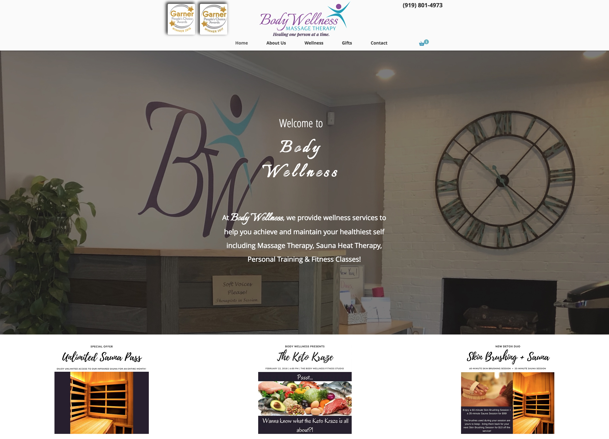

How I Got to TTS
Hi! I'm Candice and I was born in Raleigh, NC. After graduating from NC State University with a degree in Horticultural Science, I worked at several super exciting places including:
- Riverbanks Zoo & Botanical Garden in Columbia, SC
- Atlanta Botanical Garden in Atlanta, GA
- Plant Delights Nursery in Raleigh, NC
I eventually took a job as the first office manager for a Wellness Facility in Garner, NC, where a little seed was planted in my head. My new employer was in need of a brand new website, so I googled my way to Wix and designed one myself.
Upon seeing my web design come to life, that little seed grew into a desire to learn more about Web Design!
More About Me
Family
My husband and I live on a farm in Clayton. My parents live in Charlotte and my brother lives in California.
Pets
We have quite a few critters, including:
- Ava, a completely spoiled Akita-Shepherd (pictured above)
- Calypso & Greta, Cats
- Gomez & Olivia, Morelet's Crocs
- an array of Vipers